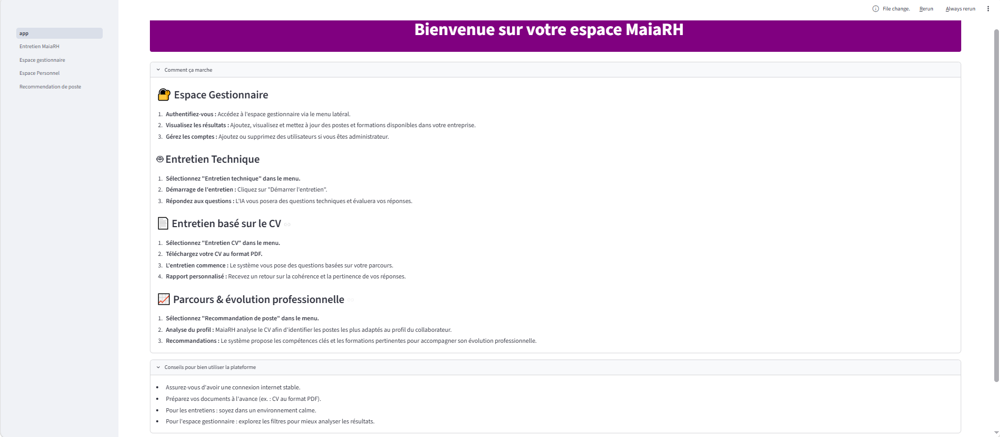
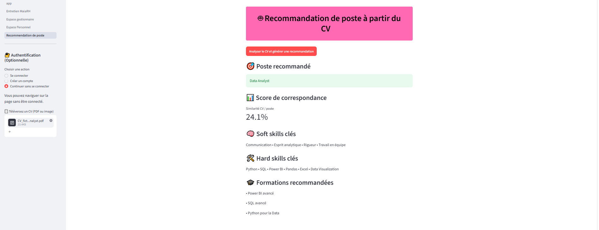

Analyse de CV
Extraction et préparation des informations issues de CV afin de rendre leur contenu exploitable automatiquement.
PROJET DATA SCIENCE & IA
MaiaRH est un projet de fin d'études conçu pour exploiter l'intelligence artificielle et le traitement de données textuelles dans différents cas d'usage RH : analyse de CV, recommandation de postes, identification des compétences, recommandations de formations et entretiens assistés par IA.
Les processus de recrutement et de mobilité interne nécessitent l'analyse de nombreuses informations : CV, compétences, expériences, postes disponibles ou encore formations.
L'objectif de MaiaRH était de concevoir une plateforme capable d'exploiter ces données pour faciliter l'identification d'opportunités professionnelles et proposer un accompagnement personnalisé aux utilisateurs.
MaiaRH centralise plusieurs fonctionnalités Data et IA au sein d'une application RH.
Extraction et préparation des informations issues de CV afin de rendre leur contenu exploitable automatiquement.
Comparaison du profil d'un candidat avec les postes disponibles afin d'identifier les opportunités les plus pertinentes.
Identification des compétences attendues et proposition de formations permettant de réduire certains écarts avec un poste cible.
Génération de questions et accompagnement du candidat au cours d'entretiens assistés par des modèles de langage.
Ma contribution s'est principalement concentrée sur le cœur Data & Machine Learning de MaiaRH, ainsi que sur la conception fonctionnelle du produit.
Analyse exploratoire des données et compréhension de leur structure afin de préparer leur utilisation dans les différents modules.
Développement du prétraitement et de l'extraction de texte à partir de plusieurs formats de CV, notamment PDF, DOCX et documents nécessitant de l'OCR.
Conception et développement du système permettant de comparer un profil aux différents postes disponibles.
Développement de la logique permettant d'associer au poste recommandé les compétences et formations pertinentes.
Gestion de la base MySQL utilisée pour stocker et exploiter les informations nécessaires au fonctionnement de l'application.
Participation à la définition des cas d'usage RH, des fonctionnalités et du parcours utilisateur de la plateforme.
L'un des composants principaux que j'ai développé est le système permettant de rapprocher automatiquement un CV des postes disponibles.
Import du CV candidat au format PDF, DOCX ou image.
Extraction, nettoyage et préparation du contenu textuel.
Vectorisation du profil et des informations associées aux postes.
Calcul de la similarité cosinus entre le profil et les postes.
Poste cible, compétences pertinentes et formations recommandées.
Cette approche permet de représenter le contenu textuel du CV et des offres sous forme de vecteurs, puis de mesurer leur proximité. Elle fournit une première solution de matching simple, interprétable et adaptée à un prototype fonctionnel.
MaiaRH a été développé sous la forme d'une application composée de plusieurs briques communiquant entre elles.
Certaines fonctionnalités du projet utilisent également des modèles de langage pour les entretiens et la génération de recommandations personnalisées. Ces briques ont été principalement développées par d'autres membres de l'équipe.
06 — APERÇU
MaiaRH propose une interface permettant d'explorer plusieurs fonctionnalités RH et d'utiliser le moteur de recommandation de poste à partir d'un CV.

Vue d'ensemble de MaiaRH et de ses principales fonctionnalités.

Exemple de recommandation à partir d'un CV : poste cible, score de similarité, compétences clés et formations recommandées.
Python · Pandas · Scikit-learn · NLP · TF-IDF · Cosine Similarity · OCR
MySQL
Streamlit · FastAPI
LLM · Hugging Face · Docker · Git
MaiaRH m'a permis de travailler sur un projet Data Science allant au-delà d'un simple notebook : préparation de données réelles, développement d'un moteur de recommandation, stockage des informations et intégration du modèle dans une application plus large.
Le projet m'a également permis de travailler sur la conception d'un produit Data en partant de problématiques métier RH pour les transformer en fonctionnalités exploitables.
VOIR PLUS
Découvrez le code du projet ou contactez-moi pour discuter d'un besoin similaire en Data Science ou Data Engineering.